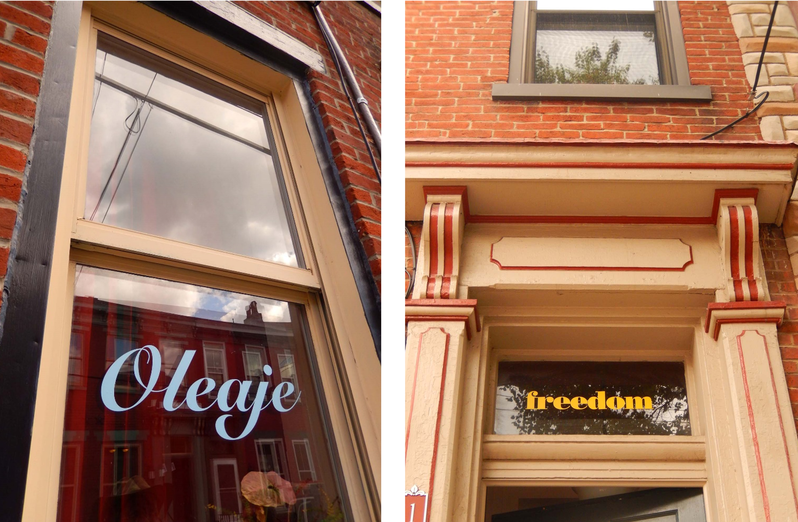
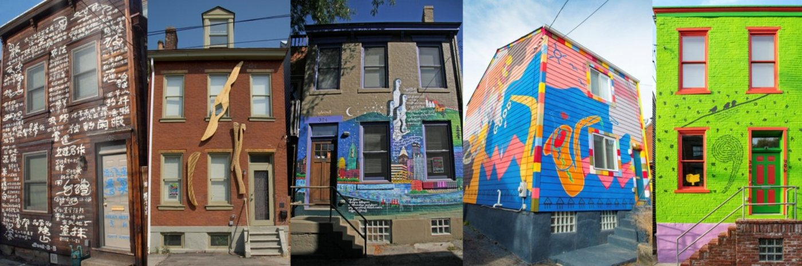

A Community Connected Through Freedom of Creative Expression
It started with one exiled poet painting his poems on a house.
$13M
Invested in the Northside
$30M
Adjacent investment catalyzed
25,000+
Annual visitors
How It Grew
From One House to a Neighborhood

2004
The First House Publication
Huang Xiang paints his "House Poem" — the first house publication on Sampsonia Way. A single act of creative defiance that would define an entire neighborhood.
2005
Our Street Made Into A Stage
Jazz Poetry Concert held on Sampsonia Way, our first free public program.
2006
Winged House
Inspired by Huang Xiang, sculptor Thaddeus Mosley and artists Laura Jean McLaughlin and Robert Ziller create our second house publication—based on a text of Wole Soyinka, who came for the dedication.
2007
Writers in the Gardens
Gist Street Reading Series curates and neighbor Sandra Kniess organizes our annual walking tour to 5 different neighbors’ gardens, with a writer in each reading a short poem or story.
2009
Pittsburgh-Burma House
Text in Burmese by Khet Mar, our third writer-in-residence, and with art by her husband Than Htay Maung.
2010
Jazz House
With images and jazz of Oliver Lake and muralized by Than Htay Maung, it covers the entire house and incorporates sound.
2011
I Don’t Know What I’d Do, If I Couldn’t Speak My Mind
Neighbor Adel Fougnies inspires and helps us organize a celebration of free creative expression in which writers of all ages — from kids to published authors — read a text that responds to the theme.
2013
Creative Placemaking Awards Spur Growth
Awards from ArtPlace America and the Our Town program of the National Endowment for the Arts enable us to expand our community-based projects and programming.
2013
Summer on Sampsonia
In a tent on vacant lots, we present 40 free programs, with a grand opening month-long performance residency by All Star Refugee Band and Archa Theater from the Czech Republic.
2014
River of Words
140 neighbors mount words on their homes. River of Words stretches half a mile across the Northside, making the entire community a canvas for free expression. A project of Venezuelan writer-in-residence Israel Centeno and Venezuelan artists Carolina Arnal and Gisela Romero.
2014
Digital Sanctuaries
A self-guided walking tour of the community, featuring site-specific poetry and music.
2015
Alphabet Reading Garden
A nuisance bar becomes the Alphabet Reading Garden — a public space with plants whose names span A to Z. The pavers are incised with hand-written letters written by neighbors in 70 different writing systems. Designed by landscape architect Joel Le Gall and artists Diane Samuels and Laura Jean McLaughlin.
2017
Alphabet City Opens
Alphabet City opens at 40 W. North Ave. — a cultural hub with a performance space, City of Asylum bookstore, and a restaurant.
2021
Comma House
Bangladeshi writer-in-residence Tuhin Das completes “Comma House,” the fifth house publication on Sampsonia Way, each with multi-lingual text-based art on the façade.
2022
Seventh Writers Residence (Unpublished)
City of Asylum can now host 7 writer families at once — the largest sanctuary for persecuted writers anywhere in the world.
What's Here Now
A Bricks and Mortar Campus Built from Freedom of Creative Expression
Spaces and public art across Pittsburgh's Central Northside, all open to the public.
The cultural heart of the campus — a performance space, independent bookstore, and the Cucina Alfabeto restaurant, all under one roof. Available for private event rental (20 to 100 guests).
Sampsonia Way House Publications
408 – 308 Sampsonia Way
A walkable outdoor gallery featuring 5 collaborations between exiled writers and visual artists. Each house facade tells a story of resilience and creative freedom.

408
House Poem
402
Winged House
324
Pittsburgh-Burma House
320
Jazz House
308
Comma House
Alphabet Reading Garden
1406 – 1410 Monterey Street (2 blocks from House Publications, around the corner)
A public green space where a nuisance bar once stood. Plants whose names span A to Z, pavers incised with handwritten letters from 70 different writing systems contributed by neighbors, and seating areas.
River of Words
Across 140 Northside homes
140 words mounted on 140 homes across the Northside, stretching half a mile. Created in 2014 by Venezuelan writer-in-residence Israel Centeno and Venezuelan artists Gisela Romero and Carolina Arnal. Map.
Digital Sanctuaries
Self-guided audio tour of the campus. Download it free.
While you walk, you can listen to site-specific music and poetry, with stops at neighborhood gems like the Ferris House (inventor of the Ferris Wheel) and the National Aviary, as well as City of Asylum locations. The app geolocates and allows users to remix the music while they listen. Music was created for each site by Electric Kulintang (Susie Ibarra and Roberto Juan Rodriguez).
We only collect information that you voluntarily provide to us. For our email subscriber list, this typically includes your name and email address.
2. How We Use Your Information
We use your information strictly to send you information about programs and organization, for occasional invitations to support our mission through donations, and to respond to questions. For City of Asylum Bookstore privacy policy: cityofasylumbooks.org/privacy-policy
3. Sharing Your Information
We value your trust. We do not sell, rent, or trade our subscriber list with third parties. We only share information with trusted service providers like our email platforms, who help us send our communications and are legally bound to keep your data secure.
4. Opting Out
Most emails include an “Unsubscribe” link at the bottom. You can also contact us at contact@cityofasylumpittsburgh.org to ask us to update or delete your information from our records.
5. Security
We take reasonable steps to protect your data from unauthorized access. However, no method of online transmission is 100% secure, and providing your information is at your own risk.
6. Contact Us
If you have questions about this policy, please reach out to us: